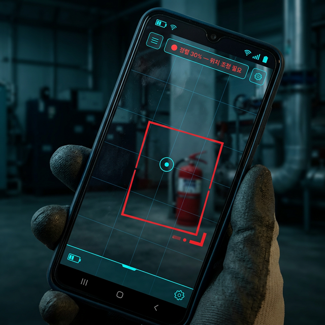

📍 성남시 분당구
활동 요원
배정됨
A급 긴급
B급
주의
실버가드는 도시의 시니어를 전문 데이터 요원으로 전환하여,
가장 정밀하고 경제적인 스마트시티 데이터 네트워크를 구축합니다.
11만개+
공공 API 실시간 수신
4배
커버리지 확대 효과
98%
보고서 자동화율
1,336개
시설관리 대상 업체
수천억이 투입된 스마트시티에도 이면도로·골목길·주차장은 여전히 데이터가 닿지 않는 사각지대입니다.
시설물 점검 의무가 빠르게 강화되고 있습니다. 법적 증거를 체계적으로 남기는 디지털 기록 체계가 필요한 시대입니다.
관할 구역은 넓어지는데 현장 인력 확보는 점점 어려워집니다. 지속 가능한 운영 구조가 필요합니다.
한국의 65세 이상 인구는 1,100만 명. 이 분들이 도시 인프라의 능동적 수호자가 된다면, 세계 어떤 나라도 흉내낼 수 없는 인간 데이터 네트워크가 완성됩니다.
국내 65세 이상 시니어 인구.
활동 반경 내 모든 사각지대 커버 가능.
국가 단위 실시간 도시 인프라 모니터링 실현.
전체 인구의 20% 시니어.
실버가드 모델이 가장 필요한 시점.
실버가드는 11만개 공공 데이터를 실시간 수신하며 도시의 위험을 선제 감지합니다.
지금 이 순간, 확장의 설계도가 완성되어 있습니다.
매일 오전 8시, AI가 동선을 생성하고 시니어 요원에게 전달합니다.
3년치 안전신문고 데이터 + 기상청 실시간 데이터로 위험 구역을 예측합니다. 매일 08:00 TSP 알고리즘으로 최단 동선을 자동 생성.
포켓몳 GO처럼 직관적인 AR 가이드라인으로 누구나 전문가체럼 수집합니다. 3-Shot Verification으로 불량 데이터 자동 차단.
현장 사진 한 장으로 관공서 제출용 HWP 0초 생성. 매일 17:00 법적 방어 아카이브가 자동 완성됩니다.
포켓몬 GO처럼 직관적인 AR 가이드로 누구나 전문가처럼
수집합니다.
3-Shot Verification — 정렬 점수 80% 이상 시 자동 셔터.

중대재해 방어 + 행정 자동화 + 커버리지 4배 확대
구역(Zone) 단위 정기 구독 솔루션 — 1개 Zone당 요원 6~8명 배치
AI 동선 배포
TSP 알고리즘이 당일 최적 순찰 경로를 생성, 요원 앱으로 자동 전달
현장 AR 점검
시설별 3-Shot 촬영 → AI 자동 검증 → Exif 증거 보존
HWP 자동 생성 & 아카이브
관공서 제출용 보고서 0초 완성 → 고객사 대시보드 자동 적재
긴급 Spot Injection
이상 상황 발생 시 내일 순찰 코스에 즉시 반영
📍 성남시 분당구